Mode d'emploi de Scopus
Scopus calcule, dans votre navigateur, le relief que la végétation cache, à partir du LiDAR HD de l'IGN. Rien à installer, pas de compte. Cette page explique chaque fonction, avec des images prises dans l'outil.
Démarrer
Ouvrez l'outil et cliquez sur Voir un exemple : il vous place sur un fort de Verdun que la forêt cache sur la photo aérienne, et que le relief révèle avec ses cratères.
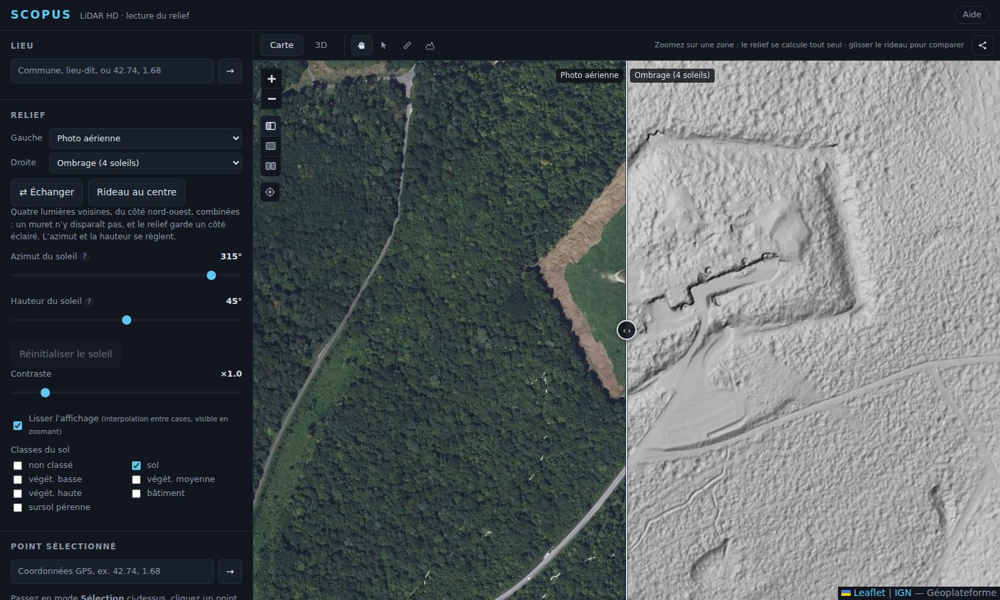
Aller quelque part
- Tapez une commune, un lieu-dit ou des coordonnées (
42.74, 1.68) dans le champ Lieu. - Le bouton viseur Ma position, sous les boutons de la carte, centre la carte sur votre appareil. Votre position reste dans votre navigateur.
- Déplacez la carte et zoomez : le relief de ce qui est à l'écran se calcule tout seul, des points les plus grossiers aux plus fins.
Où ça marche
Partout où l'IGN a publié du LiDAR HD : la métropole, la Réunion et la Guadeloupe. À la dernière vérification (fin septembre 2026), la Martinique, Mayotte et la Guyane n'avaient pas de dalle publiée : l'outil le dit par « Pas de LiDAR HD ici ».
Lire le relief
Chaque côté du rideau peut afficher une couche différente. Les listes Gauche et Droite les rangent par famille.
| Photo aérienne, Plan IGN, OpenStreetMap | Les fonds de carte, pour comparer le relief avec ce que l'on voit. |
|---|---|
| Ombrage à 4 soleils | Quatre lumières voisines, du côté nord-ouest, combinées : un muret n'y disparaît pas et le relief garde un côté éclairé. L'azimut et la hauteur du soleil se règlent. |
| Ombrage simple (1 soleil) | Un seul soleil, plus contrasté. Un muret parallèle aux rayons disparaît : tournez l'azimut pour le retrouver. |
| Ombrage coloré | Trois soleils à 120°, un par couleur : l'orientation d'une pente ou d'un mur se lit à sa teinte. |
| Sky-View Factor | La part de ciel visible depuis chaque point. Sans direction d'éclairage, il se lit de la même façon sur un versant et sur le plat. |
| Ouverture positive | Sombre là où le ciel se referme : intérieurs de cabane, fossés, chemins creux. |
| Ouverture négative | Sombre sur ce qui domine : murs, crêtes, talus. |
| Micro-relief | Le terrain moins sa version lissée : il efface le versant et garde ce qui dépasse ou creuse (talus, terrasses, chemins creux). |
| Hauteur des structures, Trous dans le sol | Ce qui se dresse au-dessus du sol, et les cases sans retour au sol. Des couches de lecture avancée. |
| MNT ombré, MNS ombré (IGN) | Les estompages calculés par l'IGN, à éclairage fixe. Ils servent de repère pour comparer avec ceux de Scopus. |
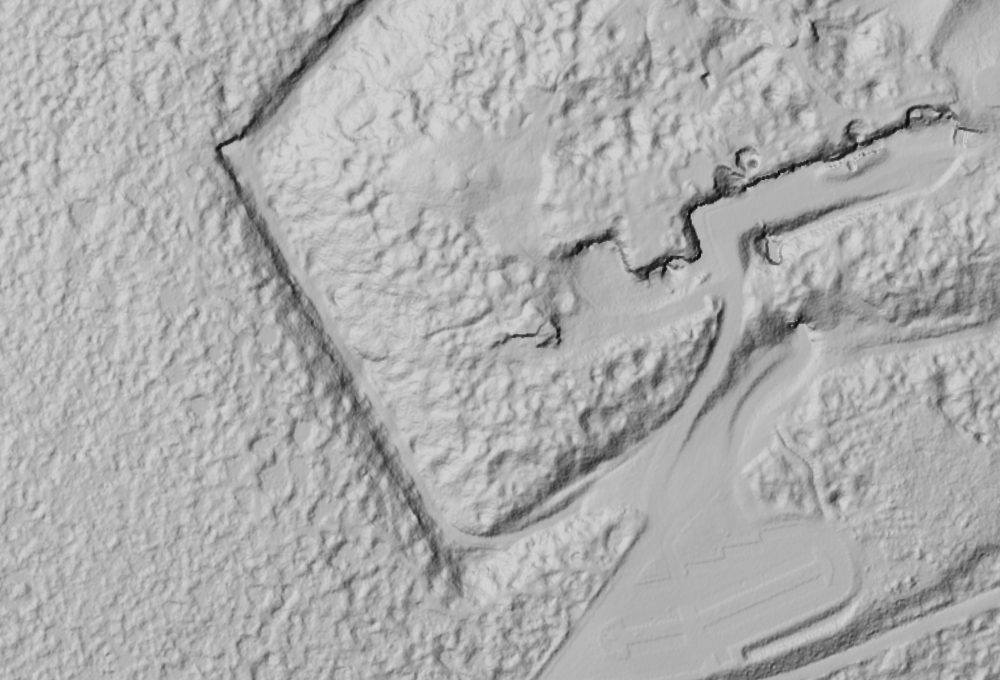
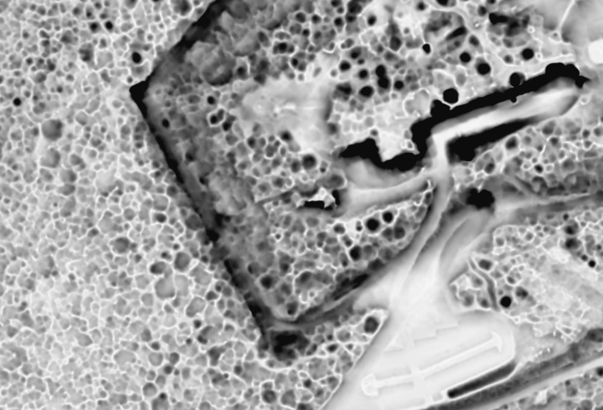
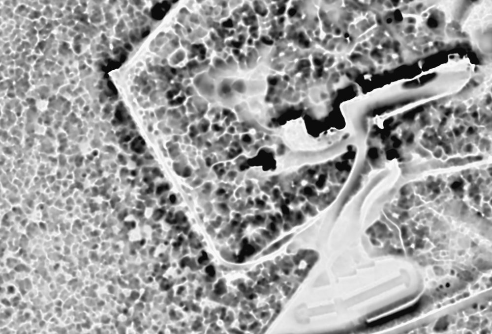
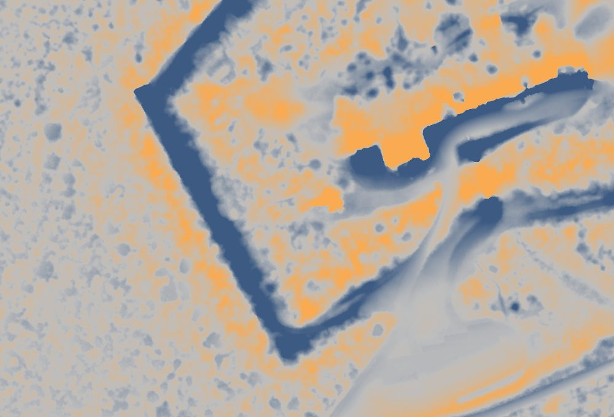
Les réglages
- Azimut et hauteur du soleil : d'où vient la lumière (315° est le nord-ouest, l'usage des cartes) et à quelle hauteur. Une lumière basse (15 à 25°) fait ressortir les moindres reliefs. Réinitialiser le soleil revient aux valeurs de départ.
- Contraste : étire l'image sans recalculer.
- Directions balayées et Rayon balayé : pour le Sky-View Factor et les ouvertures.
- Lisser l'affichage : adoucit l'image entre les cases quand on zoome, sans changer le calcul.
- Classes du sol : quels points comptent comme du terrain (sol et eau par défaut).
Comparer
- Le rideau : glissez sa poignée, au centre de la carte. Rideau au centre le remet au milieu, Échanger inverse les côtés.
- Trois modes, boutons sous le zoom : la carte scindée par le rideau, une seule carte en pleine page, ou deux cartes synchronisées côte à côte (empilées sur téléphone).
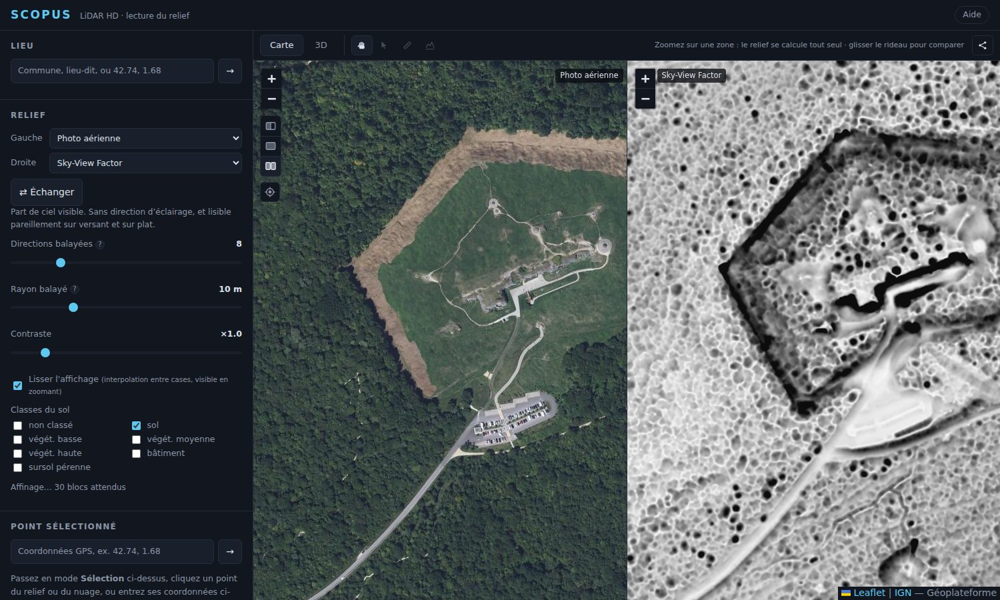
En deux cartes, la sélection, la mesure et le profil sont grisés : ils travaillent sur la carte principale.
Mesurer
Passez en mode Mesure (la règle, dans la barre du haut), puis cliquez des points de suite.
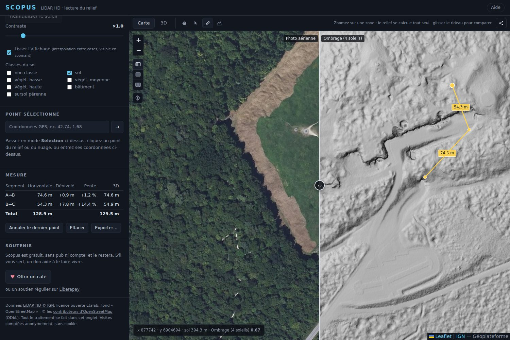
- Le tableau donne, par segment, la distance horizontale, le dénivelé, la pente (en pourcentage, comme l'étiquette
incline=15%d'OpenStreetMap) et la distance en 3D. Le total ne porte que sur les distances : un dénivelé additionné ne dirait que l'écart net. - Maj + clic pose le point à angle droit du précédent (verticale ou horizontale à l'écran), avec un trait pointillé d'aperçu.
- En mode Mesure, glissez un point pour le déplacer. Sa distance se met à jour pendant le glissé, son altitude est relue au lâcher.
- La croix du tableau retire le point d'arrivée d'un segment. Retour arrière ou Suppr retire le dernier point, Effacer recommence.
- Une valeur inconnue s'écrit « n/d » : il n'y a pas d'altitude connue à cet endroit.
Le mode Sélection donne l'altitude d'un point cliqué, sa date d'acquisition (voir plus bas) et des liens pour l'ouvrir dans d'autres cartes.
Le profil
Le profil coupe le terrain à la verticale le long d'une ligne : il montre les points du nuage vus de côté, pour mesurer la hauteur d'un arbre, d'un mur ou d'un bâtiment.
- Passez en mode Profil (à côté de la règle), puis cliquez deux points, A et B. Vous pouvez les déplacer.
- Réglez la largeur de la bande (de 0,5 à 100 m). Plus elle est étroite, plus la coupe est fine.
- Zoomez sur la carte avant de valider : plus on est près, plus le LiDAR chargé est détaillé. Attendez quelques secondes que les points arrivent, puis cliquez Valider.
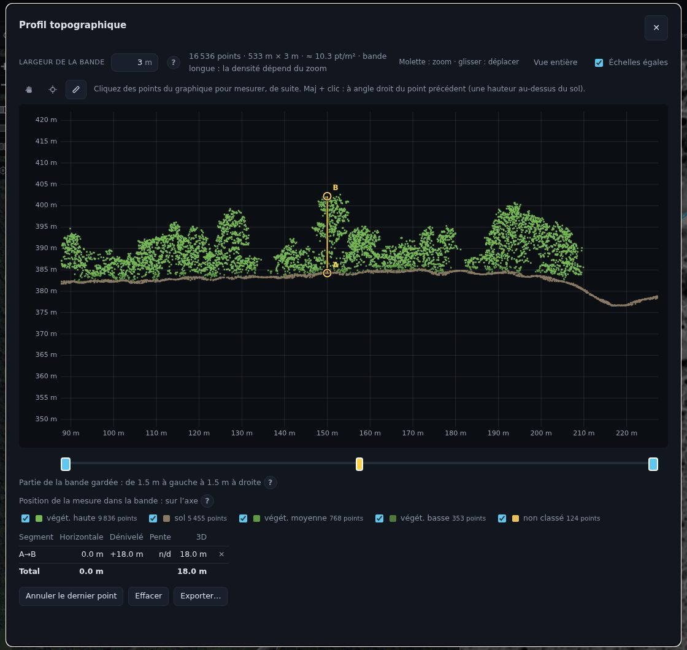
Dans le graphique
- Mesure (par défaut) : cliquez des points, le clic s'accroche au point visible le plus proche. Avec Maj, le point se pose à angle droit : une verticale donne la hauteur au-dessus du sol.
- Point de référence : il devient le zéro, en altitude comme en distance.
- Déplacement : un clic ne pose rien. La molette zoome, le glisser déplace, et à deux doigts on pince pour zoomer.
- Le double curseur garde une tranche de la largeur de la bande, par exemple pour écarter un voisin gênant.
- Le curseur jaune (qui apparaît dès qu'il y a une mesure) place la mesure dans la largeur de la bande. La ligne reste parallèle à l'axe.
- Les cases de classes montrent ou cachent le sol, la végétation, les bâtiments. Échelles égales garde les mêmes mètres par pixel en largeur et en hauteur.
La 3D
L'onglet 3D montre en nuage de points ce que la carte affichait, sans rien télécharger de plus.
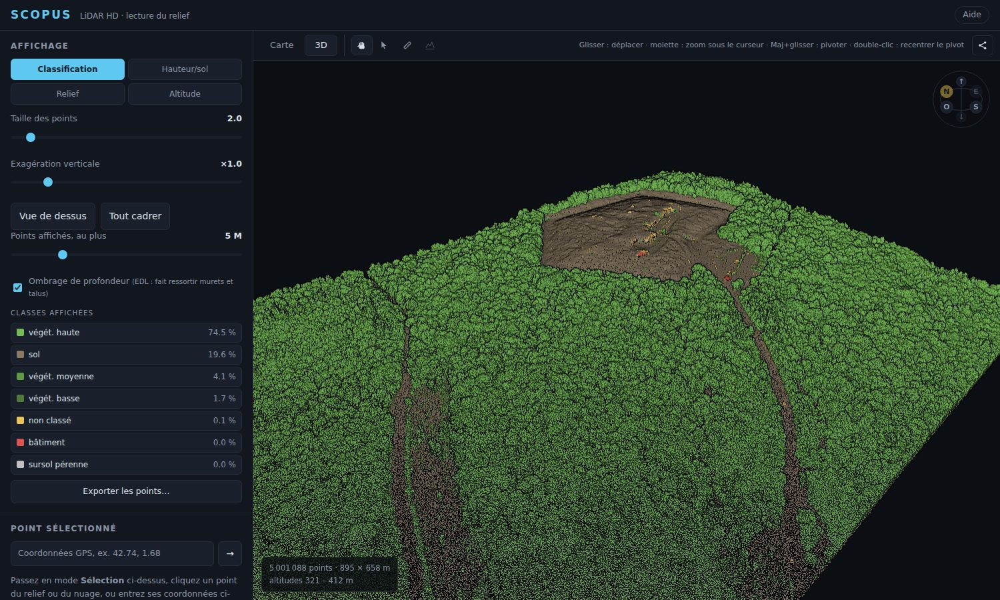
- Naviguer : glisser déplace, la molette zoome sous le curseur, Maj + glisser pivote, le double-clic recentre. Le « N » de la boussole regarde vers le nord.
- Colorer : par classe (sol, végétation, bâtiment, eau…), par hauteur au-dessus du sol, par relief ou par altitude.
- Classes affichées : cochez ou décochez chaque classe pour ne voir que le sol, ou que les bâtiments.
- Ombrage de profondeur : fait ressortir les murets et les talus.
- Mesurer et sélectionner fonctionnent aussi dans la 3D : le clic vise un point du nuage.
- Exporter les points : en LAS (tous les points) ou en PLY (les classes cochées), en coordonnées locales.
Le nombre de points affichés est plafonné (5 millions, 2 millions sur mobile). Le nuage s'étoffe tout seul tant que des points arrivent.
Exporter et partager
Exporter une mesure
Le bouton Exporter… sous le tableau de la mesure (sur la carte comme dans le profil) enregistre la ligne et ses points.
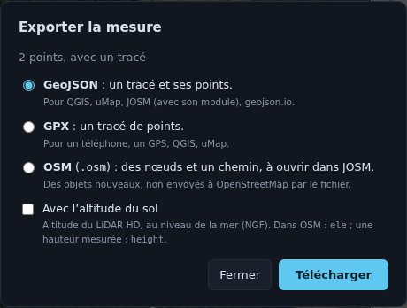
- GeoJSON : une ligne et un point par sommet (A, B, C…).
- GPX : un tracé, pour un téléphone, un GPS ou QGIS.
- OSM XML : des nœuds et un chemin à identifiants négatifs (des objets nouveaux), à ouvrir dans JOSM. Il ne porte aucune étiquette inventée, et ne s'envoie nulle part.
- La case Avec l'altitude du sol est décochée par défaut : sans elle, le fichier ne contient que longitude et latitude.
ele d'OpenStreetMap ou à un GPX, mais au sens strict du GeoJSON (hauteur sur l'ellipsoïde) elle diffère d'une cinquantaine de mètres en France.Partager une vue
Le bouton Partager copie un lien qui contient la vue, les couches de chaque côté, la position du rideau, le point sélectionné, la mesure, la bande du profil et l'onglet 3D. Celui qui l'ouvre retrouve la même chose. Ouvrir dans OpenStreetMap ne garde que la vue. Le lien s'ouvre tel quel dans osm.org, iD ou JOSM.
Comprendre les données
Scopus lit les nuages de points du LiDAR HD directement sur les serveurs de l'IGN, par morceaux, et calcule tout dans votre onglet. Il ne fabrique aucun point : le relief est calculé à partir de ce que l'IGN publie (seuls les petits trous du sol sont comblés pour le calcul, voir plus bas).
Les classes
Chaque point est étiqueté par l'IGN : sol, végétation basse, moyenne ou haute, bâtiment, eau, pont, sursol pérenne, points virtuels, divers ou non classé. Ce classement est automatique, fait par une intelligence artificielle, et il se trompe parfois.
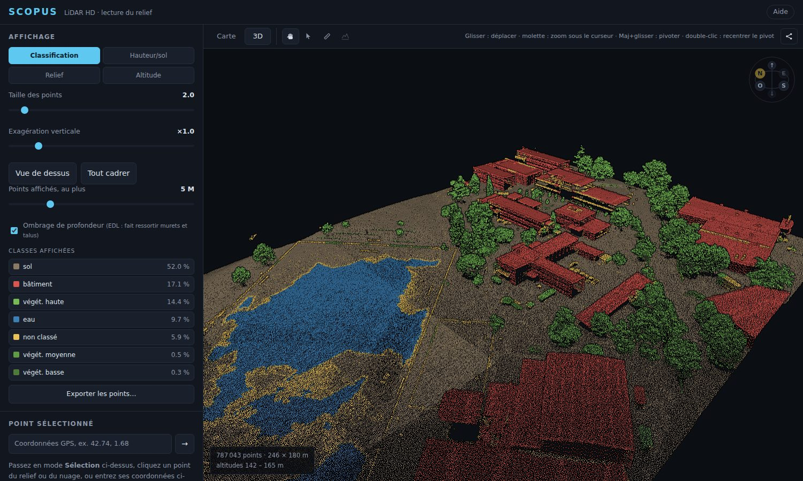
L'eau
Les LiDAR de cartographie utilisent un laser infrarouge que l'eau absorbe et reflète : il y a très peu de points sur les plans d'eau, surtout calmes. L'IGN ajoute parfois des points virtuels sur les grands cours d'eau.
La date d'acquisition
Dans Point sélectionné, la ligne « Acquisition » donne la plage de vol de la dalle qui contient le point.
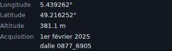
C'est la période de la mission de vol qui a couvert la zone, telle que l'IGN la publie : elle va d'un jour à plusieurs mois, voire plus d'un an, selon les chantiers. Le jour exact de chaque point n'est pas dans les données de Scopus. Sans date publiée, l'outil écrit « non publiée » : il n'invente jamais de date.
Ce que le LiDAR ne voit pas
Sous un bâtiment, sous un pont ou sous un couvert très dense, il peut manquer des points de sol. Scopus comble les petits trous (jusqu'à 3 m) pour le calcul, mais n'invente pas le terrain au-delà.
Questions fréquentes
- La carte reste vide, ou affiche « Zoomez pour calculer le relief ».
- La zone à l'écran est trop grande (plus d'environ 60 km²). Zoomez. Si c'est en dehors des dalles publiées (par exemple la Martinique, Mayotte ou la Guyane), l'outil dit « Pas de LiDAR HD ici ».
- L'outil dit « Chargement ralenti ».
- Les serveurs de l'IGN répondent lentement. Scopus réessaie tout seul : attendez quelques instants, le relief s'affine à mesure que les points arrivent.
- Un bouton ou un élément manque juste après une mise à jour.
- Le navigateur garde les fichiers quelques minutes. Rechargez sans cache : Ctrl + Maj + R.
- Pourquoi la date d'acquisition est-elle une période ?
- Parce que l'IGN publie la période de la mission de vol pour chaque dalle, pas un jour par point. Voir « Comprendre les données ».
- Pourquoi y a-t-il si peu de points sur un étang ?
- Le laser infrarouge est absorbé et reflété par l'eau. C'est normal, et sans lien avec la météo.
- Une zone est classée « eau » alors que c'est un terrain.
- Le classement de l'IGN est automatique et se trompe parfois, surtout sur les grandes surfaces lisses. Les points sont bons, seule l'étiquette est fausse.
- Le relief est moins net que celui de l'IGN.
- Les deux ne se calculent pas pareil : l'IGN interpole le sol en triangles, Scopus range les points dans des cases d'au moins 50 cm. Un rendu net demande aussi de zoomer au niveau 18 ou plus.
- Pourquoi Scopus ne trouve-t-il pas les ruines tout seul ?
- Une détection automatique a existé, puis a été retirée : elle n'avait jamais été confrontée à une structure réelle connue, donc rien ne prouvait qu'elle soit fiable. L'outil préfère montrer le relief tel quel, et laisser l'œil décider.
- Ça marche sur téléphone ?
- Oui : le panneau devient une feuille tirée du bas, la carte reste utilisable au-dessus. Les gestes au doigt du profil (appui long, pincement) ont été testés en émulation, pas encore sur de vrais téléphones : dites-moi ce qui ne va pas.
- Peut-on l'utiliser hors connexion ?
- Vous pouvez ouvrir le fichier
index.htmlsur votre disque, sans serveur. Mais les données viennent d'internet : sans réseau, il n'y a rien à afficher.
Vie privée et crédits
- Pas de compte, pas de serveur. Les points viennent directement de l'IGN, les calculs se font dans votre navigateur. Aucune donnée LiDAR ni aucun résultat ne quitte l'onglet.
- Un compteur de visites (GoatCounter), sans cookie, compte les visites de façon anonyme.
- Le cache : pour aller plus vite à la visite suivante, votre navigateur garde les points lus. Il reste chez vous.
- Un lien partagé contient le lieu que vous regardez : c'est vous qui décidez de le donner.
Données LiDAR HD © IGN, licence ouverte Etalab. Fond « OpenStreetMap (standard) » : données © les contributeurs d'OpenStreetMap (ODbL). Le code est sous licence MIT ; Leaflet et laz-perf gardent leurs licences.
Un retour, un bug ? jules.rumeau1@gmail.com, ou le forum d'OpenStreetMap France.
Soutenir Scopus
Scopus est gratuit, sans pub ni compte, et le restera. S'il vous sert, un don aide à le faire vivre. Rien n'est réservé aux donateurs.